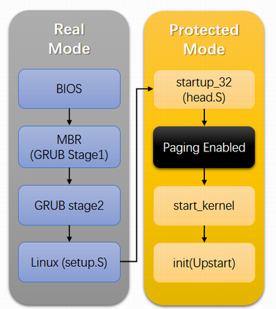

概述
- 本篇内容概述
- 1 用于梳理CPU中的一些著名的寄存器.
- 2 讲解一个硬核的计算机启动过程
- 3 讲解通用的Linux系统启动过程
寄存器

- IP: Instruction Pointer(指令指针寄存器), 指向CPU当前正在执行或者下一条要执行的指令.
- CS: 代码段寄存器
- SS: 堆栈段寄存器
- DS: 数据段寄存器. 在内存寻址时充当段基址的作用
- idtr，存放中断向量表的寄存器. IDT(Interrupt Descriptor Table).
- gdtr: 全局段描述符寄存器, GDT（Global Descriptor Table ）是存放在主存中。 GDT的地址存放在gdtr寄存器中
- cr3: 指向当前进程的页表(Page Table)
- eax: 用户进程发起系统调用时必须传递系统调用号(System Call Number). eax寄存器就是专门存放该系统调用号.
著名的汇编语言指令
-
1 int指令， int指令允许用户态进程发出一个中断信号，其值可以是0 ～ 255之间的任意数字. 著名的就是int 0x80指令，可以发起系统调用
-
2 systener指令 ，是int 0x80指令的替代者
-
3 还有其他的诸如 call,mov,jmp 等
CPU时间的感知
1Ghz 的 CPU 频率理论上 1ns 可以执行一个 cycle，即执行一条指令。 一个经典的时间图：
- 一次system call消耗时间为76ns
计算机的启动过程
BIOS 按照“启动顺序”，把控制权转交给排在第一位的存储设备：硬盘。然后在硬盘里寻找主引导记录的分区，这个分区告诉电脑操作系统在哪里，并把操作系统被加载到内存中，然后你就能看到经典的启动界面了，这个开机过程也就完成了。
为什么是BIOS主导?
都说开机后，BIOS 就开始运行自己的程序了，又硬件自检，又加载启动区的。我就不服了，为什么开机后是执行 BIOS 里的程序？为啥不是内存里的？为啥不是硬盘里的？
好的，不要怀疑前置知识，CPU 的工作方式，就是不断从内存中取指令并执行，那为什么会说是执行 BIOS 里的程序呢？这就不得不说说内存映射了。
内存映射
CPU 地址总线的宽度决定了可访问的内存空间的大小. 比如 16 位的 CPU 地址总线宽度为 20 位，地址范围是 1M。32 位的 CPU 地址总线宽度为 32 位，地址范围是 4G。
可访问的内存空间这么大，并不等于说全都给内存使用，也就是说寻址的对象不只有内存，还有一些外设也要通过地址总线的方式去访问，那怎么去访问这些外设呢？就是在地址范围中划出一片片的区域，这块给显存使用，那块给硬盘控制器使用，等等 。
内存映射技术就是把内存中相应的地址范围映射到外围设备, 就是内存中的这块位置就是显存，那块位置就是硬盘控制器。我们在相应的位置上读取或者写入，就相当于在显存等外设的相应位置上读取或者写入，就好像这些外设的存储区域，被映射到了内存中的某一片区域一样。这样我们就不用管那些外设啦，关注点仍然是一个简简单单的内存。这就是所谓的内存映射。
实模式下的内存分布
什么是实模式 和 保护模式
实模式:
实模式是Intel 80286和之后的80X86兼容CPU的操作模式。实模式存在的主要原因是要维持处理器与早期模型兼容，并让操作系统自举。
实模式的特性是一个20位的存储器地址空间（2^20 = 1048576 , 即1MB的存储器可被寻址），可以直接软件访问BIOS以及周边硬件，没有硬件支持的可分页机制和实时多任务概念。从80286开始，所有的80X86 CPU的开机状态都是实模式；8086等早期的CPU只有一种操作模式，类似于实模式。
早期CPU（如8086）是16位的CPU，寄存器是16位的，数据总线是16位的，也就是说在8086内部，能够一次性处理与传输的数据最长为16位比特，那么它的寻址能力仅为2^16=64 KB。但是地址总线却是20位的，即其寻址能力为2^20=1 MB。
为了解决寻址能力不匹配这一问题，引入了地址加法器，以如下公式进行地址的换算：内存地址 = (段地址 << 4) + 段内偏移地址。
由于寄存器为16位，则其中存的段地址/段内偏移地址为16位，段地址向左偏移4位即得20位的地址，再加上段内偏移即可得到内存中实际的物理地址。
这样的寻址方式是很直接的，相当于物理地址直接暴露在程序员面前，程序员可以随意的修改内存各处的内容，有着较大的安全隐患。或许这就是为什么叫做实模式吧。
另外，还有一点值得注意：段地址+段内偏移地址这样的寻址方式对于16位CPU而言是可以“越界”的。对于16位而言，最大地址即为FFFF，因此可取得内存地址：
若想访问到10FFEF，需要21根地址总线，但是实际地址总线仅有20根，内存地址实际最大仅为100000 < 10FFEF，越界了。但是系统并不认为其访问越界而抛出异常，而是将访问大于等于100000的地址均对100000取模，因此此时访问到的就是较小的内存地址了。
再后来，CPU发展到了80286，此时地址总线已有24根，那么10FFEF就是可以访问到的了，但是在实模式下，为了向下兼容，系统表现的行为又应同8086一样，即仿佛“只有20根地址总线”。为了能够自由选择实模式下寻址能力的大小，便出现了A20 Gate。
A20 Gate
A20 Gate是第21根地址总线，它有一个开关，对于实模式而言：
- 开关打开时，这根地址总线可用，程序员可以访问到100000～10FFEF的地址
- 开关关闭时，这根地址总线不可用，程序员不可以访问到100000～10FFEF的地址
因此在实模式下要想访问高端内存区，这个开关必须打开。在保护模式下，如果A20关闭，那么系统只能访问奇数兆的内存，即只能访问0～1M、2～3M……，所以在保护模式下，这个开关一般也会打开。
保护模式:
在后续更高系列的CPU中，即使A20 Gate被打开，在实模式下所能够访问的内存最大也只能为10FFEF，而内存的寻址能力远不止如此。为了能够访问更大的地址，则必须进入保护模式。
虽然后续一般寄存器和地址总线都有着相同的位数，但系统并没有使用寄存器直接指定内存地址，而是沿用了段地址+段内偏移地址的寻址方式。段值存入段寄存器，而该值作为索引，用于在全局描述符表（GDT）中寻找到对应的一个表项（段描述符），该表项中含有段地址、段大小、访问控制等信息，得到其中的段地址后再加上合法的段内偏移，即可访问到对应的物理地址。
GDT条目结构如下所示：
综上可知，在保护模式下，物理地址并不是直接暴露在程序员面前了，寻址有了更多的检查步骤，这是属于虚拟内存的范畴.
小结:
- 实模式下, CPU可以直接访问到物理地址，而且16位的CPU其寻址范围位0 ～ 1MB.
- 保护模式是80286以及之后的CPU才有的相对更加高级的功能, 并且强制要求程序员使用
段地址+段内偏移地址的寻址方式.
继续实模式下的内存分布
- 我们假设启动的时候, 就是早期的实模式情况.
刚刚说到内存中划分出了一片一片区域给各种外设，那么问题自然就来了，哪块区域，分给了哪块外设了呢？如果是规定，那应该有一张表比较好吧。嗯没错，还真有，它就是实模式下的内存分布，笔者给它画了一张图(0 ~ 1MB-1)：

我们看到，内存被各种外设瓜分了，即映射在了内存中。BIOS 更狠，不但其空间被映射到了内存 0xC0000 - 0xFFFFF 位置，其里面的程序还占用了开头的一些区域，比如把中断向量表写在了内存开始的位置.
怎么就从 BIOS 里的程序开始执行了
好了，现在我们知道 BIOS 里的信息被映射到了内存 0xC0000 - 0xFFFFF 位置，其中最为关键的系统 BIOS 被映射到了 0xF0000 - 0xFFFFF 位置。
CPU 从内存的哪个位置取出执行并执行呢？是 PC 寄存器中的地址值。BIOS 程序的入口地址也就是开始地址是 0xFFFF0（人家就那么写的），也就是开机键一按下，一定有一个神奇的力量，将 pc 寄存器中的值变成 0xFFFF0，然后 CPU 就开始马不停蹄地跑了起来。没错，接下来这句话，可能就是你找了很久的答案，请做好准备：
在你开机的一瞬间，CPU 的 PC 寄存器被强制初始化为 0xFFFF0。如果再说具体些，CPU 将段基址寄存器 cs 初始化为 0xF000，将偏移地址寄存器 IP 初始化为 0xFFF0，根据实模式下的最终地址计算规则，将段基址左移 4 位，加上偏移地址，得到最终的物理地址也就是抽象出来的 PC 寄存器地址为 0xFFFF0。
当我在学习这段知识时，看到这句话才让将我心里积压了很久的疑惑解开，多么简单粗暴的道理啊。写到这里我也是长舒了一口气，因为剩下的过程，就几乎只是流水账一样的正推了。
至于怎么强制初始化的，我觉得就越过了前置知识的边界了，况且各个厂商的硬件实现也不一定相同，有很多办法，也很简单。讨论起来意义就不大了。

BIOS 里到底写了什么程序
好了，我们现在知道了 BIOS 被映射到了内存的某个位置，并且开机一瞬间 CPU 强制将自己的 pc 寄存器初始化为 BIOS 程序的入口地址，从这里开始 CPU 马不停蹄地向前跑了起来。那接下来的问题似乎也非常自然地就问出来了，那就是 BIOS 程序里到底写了啥？
把 BIOS 程序里的二进制信息全贴出来也不合适，我们分析一些主要的。我们首先还是来猜测，你看入口地址是 0xFFFF0，说明程序是从这执行的。实模式下内存的下边界就是 0xFFFFF，也就是只剩下 16 个字节的空间可以写代码了，这够干啥的呢？如果你有心的话应该能猜出，入口地址处可能是个跳转指令，跳到一个更大范围的空间去执行自己的任务。没错就是这样，0xFFFF0 处存储的机器指令，翻译成汇编语言是：
jmp far f000:e05b
意思是跳转到物理地址 0xfe05b 处开始执行（回忆下前面说的实模式下的地址计算方式）。
地址 0xfe05b 处开始，便是 BIOS 真正发挥作用的代码了，这块代码会检测一些外设信息，并初始化好硬件，建立中断向量表并填写中断例程。这里的部分不要展开，这只是一段写死的程序而已，而且对理解开机启动过程无帮助，我们看后面精彩的部分，也就是 BIOS 的最后一项工作：加载启动区。
0x7c00 是啥
该较真的地方就是要较真，我绝对不会让加载这种魔幻的词出现在这里，我们现在就来把它拆解成人话。
其实这个词也并不魔幻，加载在计算机领域就是指，把某设备上（比如硬盘）的程序复制到内存中的过程。那加载启动区这个过程，翻译过来就是，BIOS 程序把启动区的内容复制到了内存中的某个区域。好了，问题又自然出来了，启动区是哪里？被复制到了内存的哪个位置？然后呢？我们一个个来回答。
什么是启动区呢？即使你不知道，你也应该能够猜到，一定是符合某种特征的一块区域，于是人们把它就叫做启动区了，那要符合什么特征呢？先不急，不知道你有没有过设置 BIOS 启动顺序的经历，通常有 U 盘启动、硬盘启动、软盘启动、光盘启动等等，BIOS 会按照顺序，读取这些启动盘中位于 0 盘 0 道 1 扇区的内容。
至于磁盘格式的划分，本篇就不做讲解了，总之对于内存，我们给出一个数字地址就能获取到该地址的数据，而对于磁盘，我们需要给出磁头、柱面、扇区这三个信息才能定位某个位置的数据，都是描述位置的一种方式而已。
接着说， 这 0 盘 0 道 1 扇区的内容一共有 512 个字节，如果末尾的两个字节分别是 0x55 和 0xaa，那么 BIOS 就会认为它是个启动区。如果不是，那么按顺序继续向下个设备中寻找位于 0 盘 0 道 1 扇区的内容。如果最后发现都没找到符合条件的，那直接报出一个无启动区的错误。
BIOS 找到了这个启动区之后干嘛呢？哦，前面说过了是加载，就是把这 512 个字节的内容，一个比特都不少的全部复制到内存的 0x7c00 这个位置。怎么复制的？当然是指令啦。哪些指令呢？这里我只能简单说指令集中是有 in 和 out 的，用来将外设中的数据复制到内存，或者将内存中的数据复制到外设，用这两个指令，以及外设给我们提供的读取方式，就能做到这一点啦。
启动区内容此时已经被 BIOS 程序复制到了内存的 0x7c00 这个位置，然后呢？这个其实也不难猜测，启动区的内容就是我们自己写的代码了，复制到这里之后，就开始执行呗，之后我们的程序就接管了接下来的流程，BIOS 的使命也就结束啦。所以复制完之后，接下来应该是一个跳转指令吧！没错，正是这样，PC 寄存器的值变为 0x7c00，指令开始从这里执行。
咦？不知道你有没有发现，我们似乎不知不觉又把之前的一句魔法语言翻译成人话了，开头我们说：
BIOS 把控制权转交给排在第一位的存储设备。
所以这句话是什么意思呢？就是 BIOS 把启动区的 512 字节复制到内存的 0x7c00 位置，并且用一条跳转指令将 pc 寄存器的值指向 0x7c00。你看，这不是也没多几个字嘛，就把这个问题说得明明白白，简简单单。
哦，对了，现在似乎就剩下一个问题了，为什么非要是 0x7c00 呢？ 它其实就是一个规定死的值.
答案很简单，那就是人家 BIOS 开发团队就是这样定的.
为啥硬盘中的 0 盘 0 道 1 扇区的 512 个字节的最后两个字节分别是 0x55 和 0xaa，那么 BIOS 就会认为它是个启动区。
- 其实是一个规定而已
- 但也有一种浪漫的解释:
0x55对应ASCII码的U，也就是Unix的首字母。而0x55左移一位为0xAA，这里的A代指AT&T，因为Unix来自于“AT&T Unix”。意即，感谢AT&T诞生Unix。想想，机器启动时满载感恩，这也许就是大神们的浪漫吧.
启动区里写了啥?
启动区里的代码写了啥？就 512 字节就是全部操作系统内容了？
这是一个好问题，512 个字节确实干不了啥，现在的操作系统怎么也得按 M 为单位算吧，512 个字节远远不够呢，那是怎么回事呢？
其实我们可以按照之前的思路猜测，BIOS 用很少的代码就把 512 字节的启动区内容加载到了内存，并跳转过去开始执行。那按照这个套路，这 512 字节的启动区代码，是不是也可以把更多磁盘中存储的操作系统程序，加载到内存的某个位置，然后跳转过去呢？
没错，就是这个套路。所以 BIOS 负责加载了启动区，而启动区又负责加载真正的操作系统内核，这配合默契吧？
由于用于启动盘的磁盘是人家写操作系统的厂商制作的，俗称制作启动盘，所以他也肯定知道操作系统的核心代码存储在磁盘的哪个扇区，因此启动区就把这个扇区，以及之后的好多好多扇区（具体取决于操作系统有多大）都读到内存中，然后跳转到开始的程序开始的位置。跳转到哪里呢？这个就不像 0x7c00 这个数那么经典了，不同的操作系统肯定也不一样，也不用事先规定好，反正写操作系统的人给自己定一个就好了，别覆盖其他关键设备用到的区域就好。
操作系统内核写了啥
好了现在经过好几轮跳跳跳，终于跳到内核代码啦，我们来一起回顾一下：
- 按下开机键，CPU 将 PC 寄存器的值强制初始化为 0xffff0，这个位置是 BIOS 程序的入口地址（一跳）
- 该入口地址处是一个跳转指令，跳转到 0xfe05b 位置，开始执行（二跳）
- 执行了一些硬件检测工作后，最后一步将启动区内容加载到内存 0x7c00，并跳转到这里（三跳）
- 启动区代码主要是加载操作系统内核，并跳转到加载处（四跳）
经过这连续的四次跳跃，终于来到了操作系统的世界了，剩下的内容，可以说是整个操作系统课程所讲述的原理，分段、分页、建立中断、设备驱动、内存管理、进程管理、文件系统、用户态接口等等。
Linux启动过程
-
通过几张图感受下
-

-

Linux系统Login中, Bash Shell配置读取过程
-
Login Shell:
/etc/profile-->/etc/profile.d/*.sh-->~/.bash_profile-->~/.bashrc-->/etc/bashrc -
非Login Shell:
~/.bashrc-->/etc/bashrc-->/etc/profile.d/*.sh